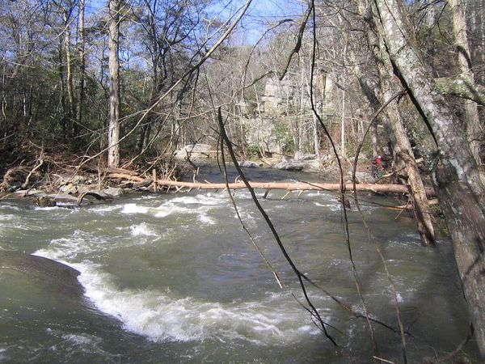
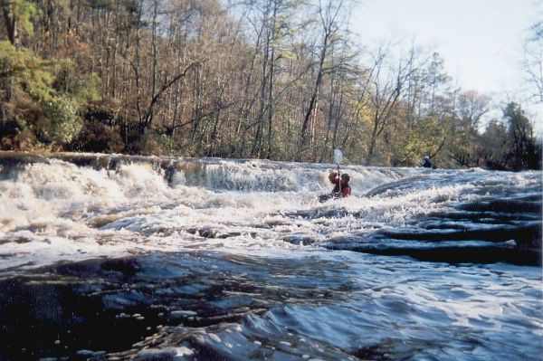
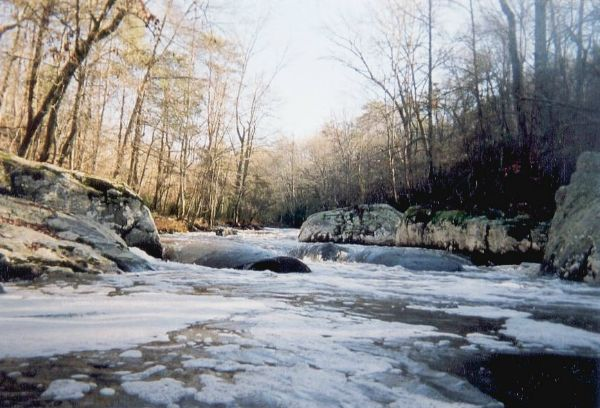
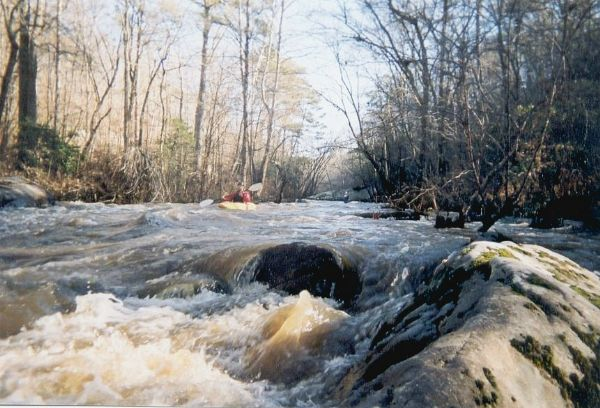

Upper Scarham Creek
|  | We ran upper Scarham Creek on 11-26-04 and encountered a booger
of a strainer in the first rapid past the 75 bridge. It is river-wide and unavoidable, so we walked the rapid.
However, at higher water, it might be very hard to eddy out before the rapid, and the rapid is fairly long. As
the picture shows, the difficulty due to the tree could get bad. Hope this helps somebody. --Kevin M. Hobbs |
|  | Josh Tidwell on the largest drop on Upper Scarham. Steve Rayfield at the top
eddy. (Brian McAnally photo courtesy Josh Tidwell) |
|  | Pictures don't do it justice. This was actually a long rapid, with several drops,
and a big rock with a submerged tree right in the middle. (Brian McAnally photo courtesy Josh Tidwell) |
|  | View back upstream. Josh Tidwell in front, Steve in the rear. (Brian McAnally photo courtesy Josh Tidwell) |